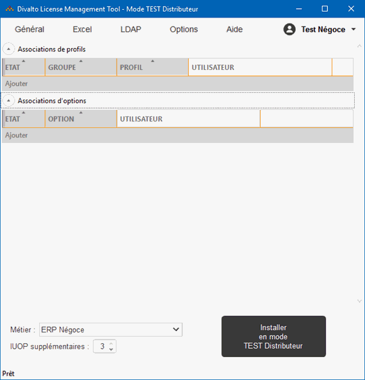

Accueil | Mode "Test distributeur" | Mode "Test distributeur"
Dans l’outil de gestion des licences DLMT, le distributeur a la possibilité d’utiliser ses propres numéro de site et code d’accès pour tester les licences V10.
Une fois DLMT connecté avec le numéro de site distributeur, DLMT passe en "Mode TEST Distributeur".
L’interface sera toujours vide : aucune saisie de profil n’est sauvegardée.
En bas, une liste de métiers est disponible. Elle permet de charger des licences spécifiques aux différents métiers.
Il est possible de saisir des profils et des options, à la manière habituelle.
Un clic sur le bouton "Installer en mode TEST distributeur" active des licences V10 sur le poste pour une durée de 24h.
Pour arrêter le test des licences V10, il est impératif de passer par le menu Général --> Désinstaller les licences.
